6G communications
Wireless networks for connected robots and autonomous systems.

Istanbul Medipol University
Istanbul, Türkiye
October 30 – November 2, 2026
CoEI 2026 brings together researchers from Türkiye and China to explore connected embodied intelligence at the intersection of robotics, wireless communications, sensing, artificial intelligence, and computing. The workshop focuses on how communication networks and intelligent physical systems can work together to support perception, learning, decision-making, and coordinated action. Topics include 6G-enabled robotics, integrated sensing and communication, robot learning, cloud and edge intelligence, and space–air–ground connectivity. Combining complementary expertise in robotics and communications, participants will discuss research challenges and share approaches linking network design with real-world robotic applications. Through research talks, student posters, technical demonstrations, and visits, the workshop provides a forum to exchange recent advances, connect researchers and students across disciplines, and explore opportunities for shared simulation platforms, datasets, joint research, and publications.
Wireless networks for connected robots and autonomous systems.
Radio-frequency perception and integrated sensing and communication.
Perception, planning, and control in the physical world.
Learning-enabled autonomy, simulation, and real-world demonstrations.
Distributed computing to support connected embodied systems.
Communications across terrestrial, aerial, and space platforms.
Friday, October 30: Arrival, afternoon visit to Medipol University and research demos, followed by a welcome dinner.
Saturday, October 31: Main conference. All times are Istanbul local time (UTC+3).
Sunday, November 1: City tour and lunch together; no technical program.
Monday, November 2: Technical visits to Huawei Türkiye and TÜBİTAK, including the ATAM and HISAR laboratories.
CoEI 2026 in pictures
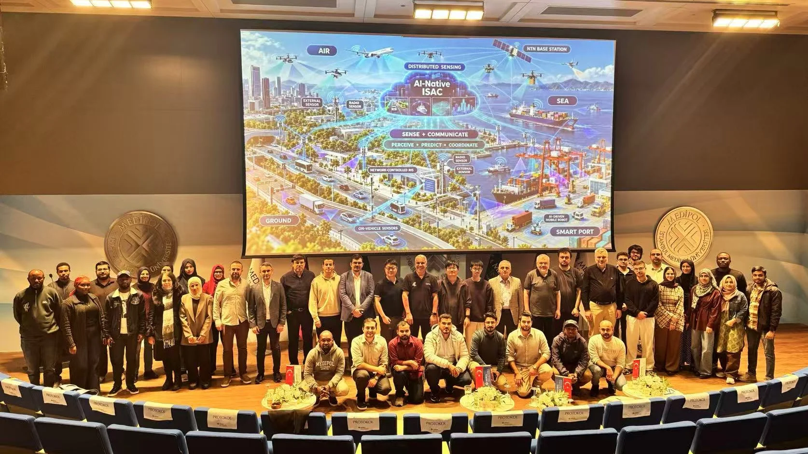
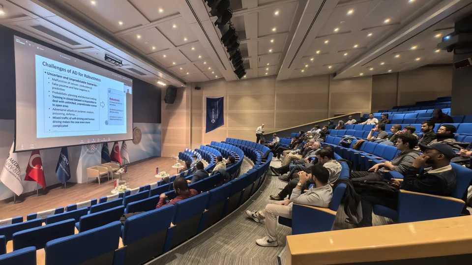
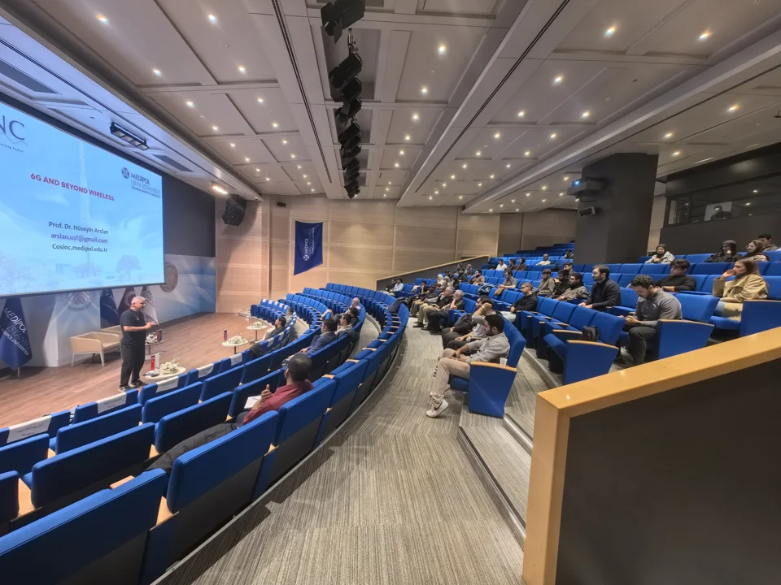
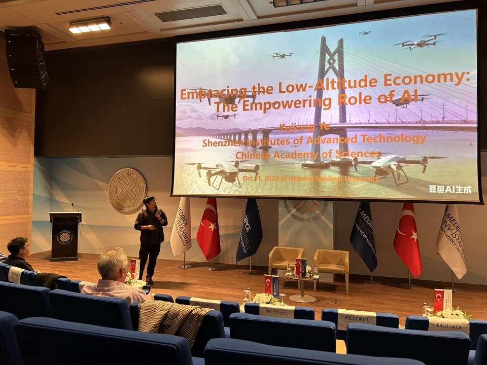
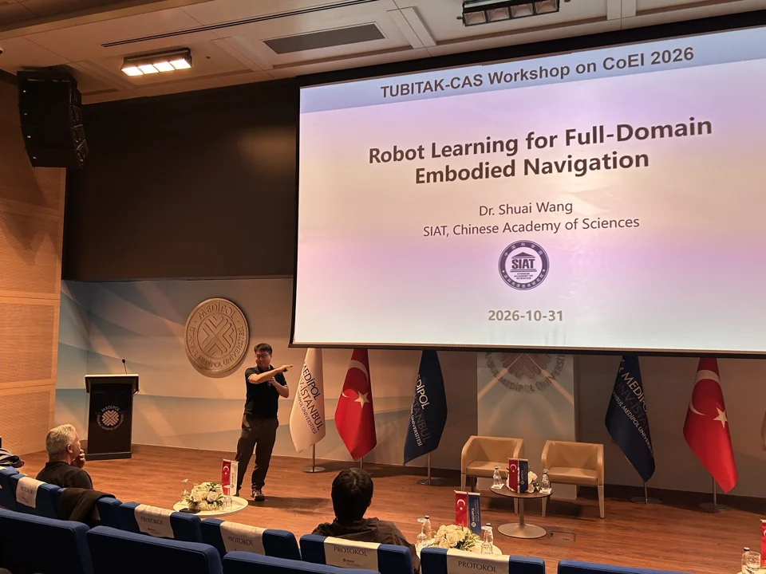
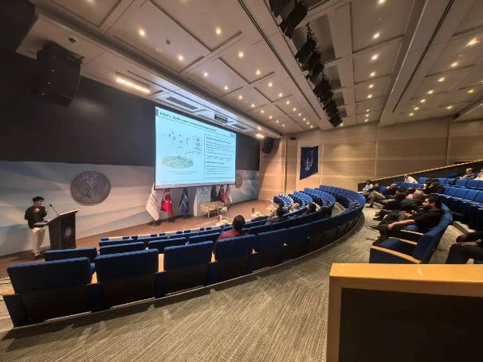
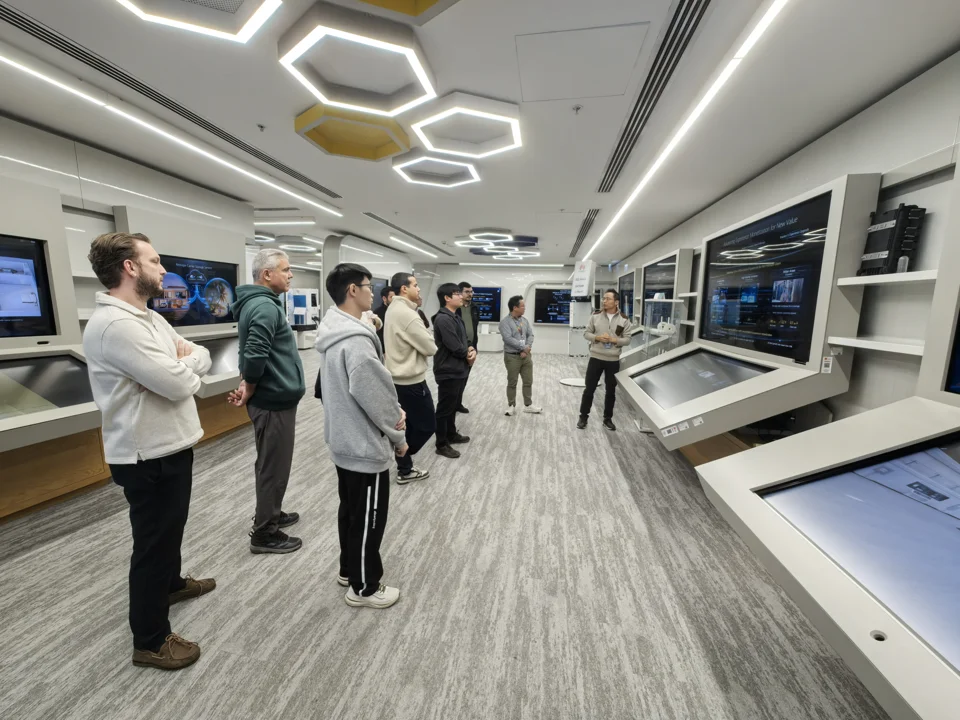
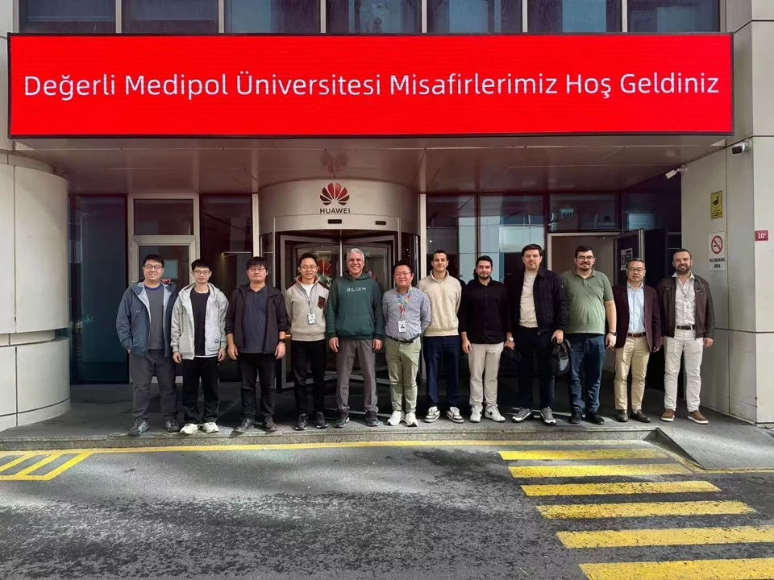
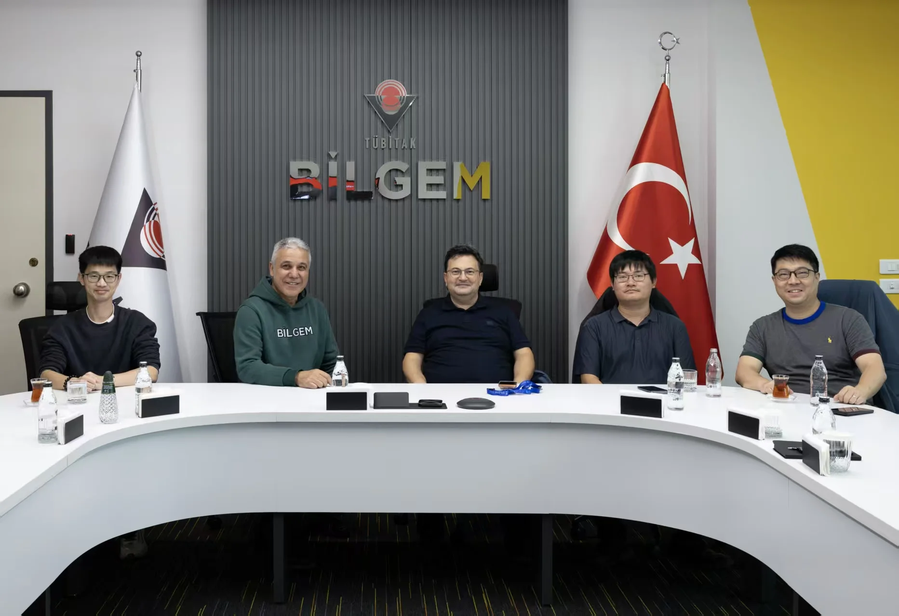
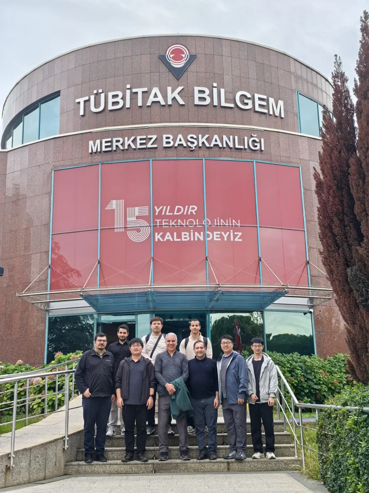
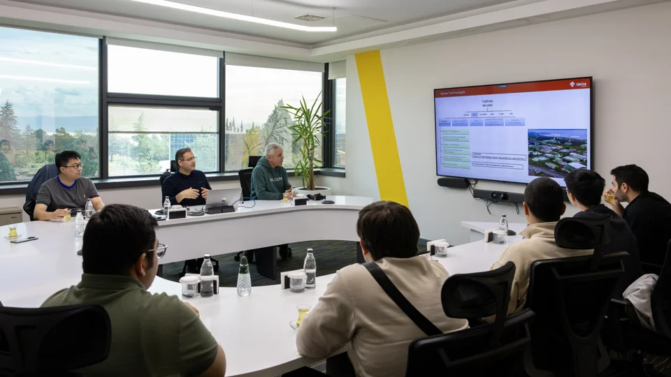
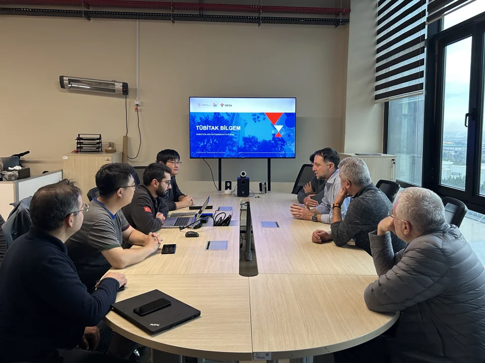
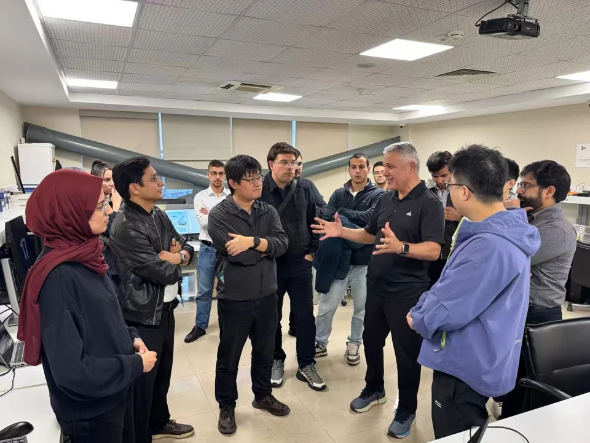
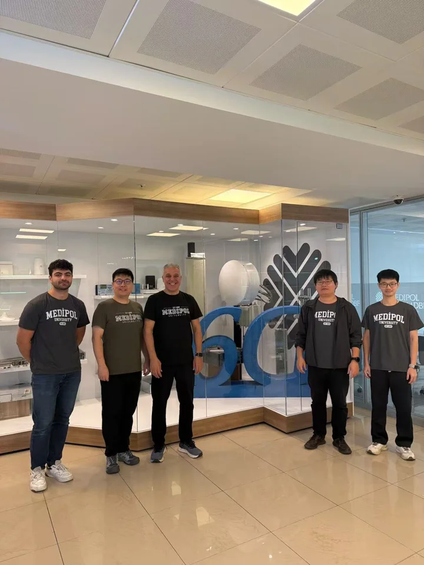

University of Macau

Istanbul Medipol University

SIAT, Chinese Academy of Sciences

SIAT, Chinese Academy of Sciences

SIAT, Chinese Academy of Sciences
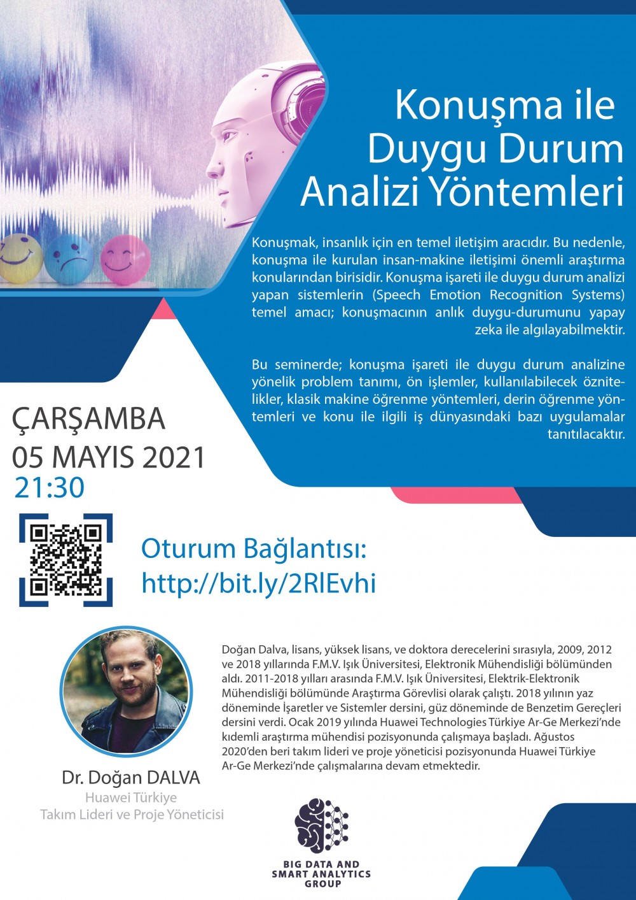
Huawei Türkiye
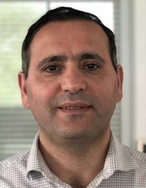
TÜBİTAK BİLGEM
Research presentations · Monday, TÜBİTAK visit

South China University of Technology

Istanbul Medipol University directs science and society with its strong institutional culture and entrepreneurial spirit. Founded on July 7, 2009, by the Turkey Education, Health, and Research Foundation (TESA), the university quickly became a pioneer in education in the heart of Istanbul, offering modern classrooms, laboratories, and libraries.
Medipol provides students with a comprehensive campus experience through its Kavacık North and South Campuses, dormitories, sports facilities, and research laboratories. In addition, through its partnership with Medipol Mega, it operates as a university hospital. Across its three campuses, the university maintains its vision as “the university shaping a livable world” with 12 faculties, three vocational schools, and a School of Health Sciences.
Istanbul Medipol UniversityIstanbul Medipol University
SIAT, Chinese Academy of Sciences
Huawei Türkiye
University of Macau
Tubitak Bilgem
Istanbul Medipol University
South China University of Technology
Istanbul Medipol University
Istanbul Medipol University
Istanbul Medipol University
SIAT, Chinese Academy of Sciences
We gratefully acknowledge the Turkish Academy of Sciences (TÜBA) and the Chinese Academy of Sciences (CAS). This workshop was supported by the CAS-TUBITAK Joint Call under the International Partnership Program of the Chinese Academy of Sciences (Grant No. 321GJHZ2025118M) and The Scientific and Technological Research Council of Türkiye (Grant No. 225N080).